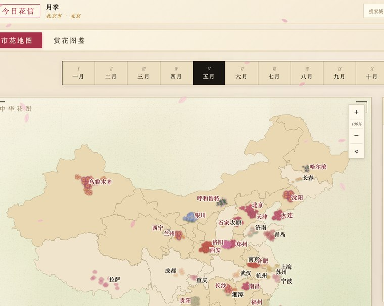

42 城
22 市花 · 12 月花信 · 92 处赏花胜地
百城花信
中国市花交互地图 · 零依赖单文件 PWA
一张可交互的中国城市市花地图：切月份看花信由南向北流转，点城市看市花谱、花语诗词与赏花胜地。 核心判断是把地图当数据，不当插画，地理正确性优先、再谈视觉。
同源投影解决「地图不准」。底图用真实行政边界投影成 SVG，城市点用同一投影算坐标，城市天然落在对的省里，再用无头浏览器截图人眼核验离群点。
92 处赏花点自动配图、宁缺勿错。英文 / 拼音精选查询前置、砍掉泛化兜底、加 SVG 与尺寸过滤，抓取结果人眼逐张核验才入库。
22 种花纯 Canvas 手绘。40+ 个绘制函数做分层水彩晕染，零图形库；PWA 离线可用 + 完整 SEO。